Consider a time series representing a signal plus noise. If the data points are grouped into bins, the noise of the binned observables will reduce by the square root of the number of points in each bin. On the other hand, the number of data points the time series consists of reduces by the same amount. Since these two effects cancel each other, the noise level in the power spectrum will be the same for unbinned and binned data. Why are the corresponding significance levels different?
 . The signal amplitude is 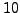 for the top panels and 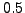 for the bottom panels. Black graphs: same for time series data grouped into bins of two points. The resulting time series consists of 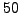 data points.
. The signal amplitude is 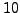 for the top panels and 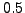 for the bottom panels. Black graphs: same for time series data grouped into bins of two points. The resulting time series consists of 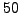 data points.
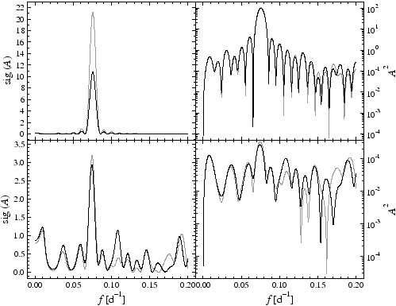
Fig.40 contains the significance (left panels) and power (squared amplitude) spectra (right panels) of a synthetic time series containing a sinusoidal signal with a frequency of
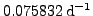 plus Gaussian noise (serially uncorrelated) with a standard deviation of  . The top panels refer to a signal amplitude of , the bottom panels to a signal amplitude of . All corresponding plots are displayed in grey colour. The black graphs represent the spectra generated by a binned version of the time series: each bin contains two data points, and the observable is the arithmetic mean. The resulting time series consists of data points.
. The top panels refer to a signal amplitude of , the bottom panels to a signal amplitude of . All corresponding plots are displayed in grey colour. The black graphs represent the spectra generated by a binned version of the time series: each bin contains two data points, and the observable is the arithmetic mean. The resulting time series consists of data points.
The right panels are scaled logarithmically to illustrate that binning does not change the signal peak and the mean power level. This is true for both strong and weak signals. In terms of sig the situation is different: binning reduces the peak significance for strong, but not for weak signals.
For the correct interpretation of the output, the fundamental difference between classical signal-to-noise ratio estimation and SIGSPEC has to be taken into account again. Classical techniques prewhiten a peak under consideration and employ the residuals to estimate a noise level. SIGSPEC asks for the probability that the given time series represents white noise, i.e., that there is no correlation between consecutive data points. This does not imply any prewhitening.
If the time series represents pure noise and the data are binned, the mean power in the frequency domain will remain practically unchanged. The increasing noise level due to the reduced number of data points is compensated by the fact that binning diminishes the time-domain scatter. For a time series representing pure noise, the distribution of sigs will be the same for unbinned and binned data, respectively.
In the case of a dominant signal plus a tiny scatter, the unbinned and binned data have comparable rms deviations, which are mainly determined by the signal. In the frequency domain, only the reduced number of binned data points comes into play, and correspondingly, the sig decreases.
A simple example illustrates that this makes sense: consider a coin with faces A and B. It is flipped eight times, and the results shall be A-A-B-B-A-A-B-B. An easy calculation reveals this "rectangular signal" as one out of 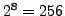 possible cases. Binning these data into groups of two points reduces the above sequence to A-B-A-B, which represents one case out of 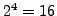, in other words, the number of cases reduces to the square root of the above 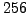. The sig (logarithmically scaled) would thus decrease to half the value for the unbinned data.
Dominant signals let the sig drop to 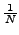 by forming groups of  data points. Dominant noise leaves the distribution of sigs more or less unchanged: in Fig.40, top left panel, the grey peak is about twice as high as the black peak.
data points. Dominant noise leaves the distribution of sigs more or less unchanged: in Fig.40, top left panel, the grey peak is about twice as high as the black peak.


Next: Linear interpolation: more information?
Up: Frequently Asked Questions
Previous: Changing sig in a
Contents
Piet Reegen
2009-09-23